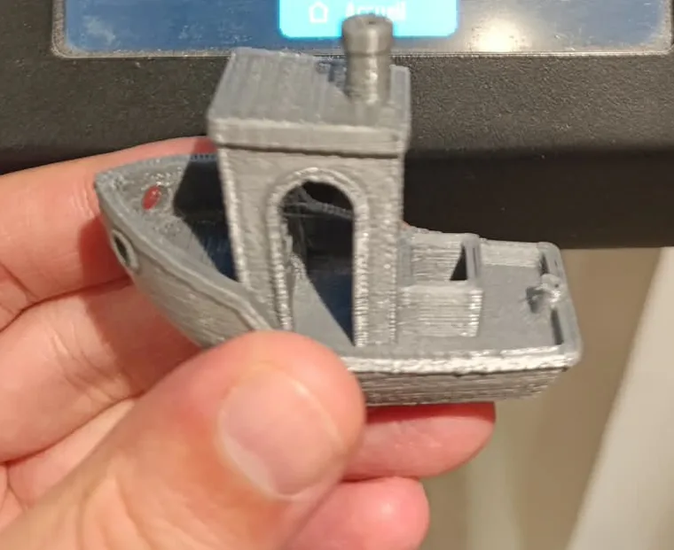
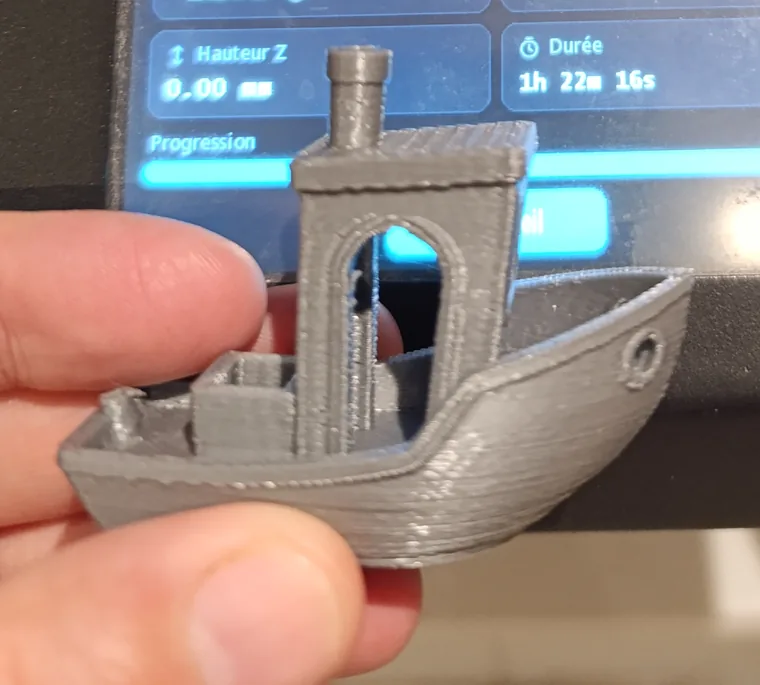
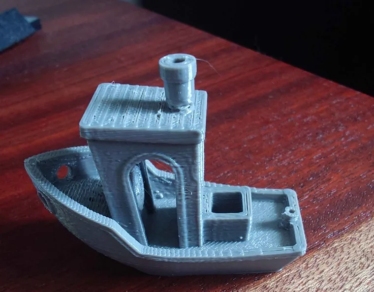

Slicing per la Duplicator 9
Un profilo per ognuna delle dodici stampanti, per UltiMaker Cura e OrcaSlicer, entrambi gratuiti e disponibili su Windows, macOS e Linux. Ognuno riprende il volume di stampa, le accelerazioni e la temperatura massima del piatto del proprio firmware.
Download
| Modello | Cura | OrcaSlicer |
|---|---|---|
| MK1 D9/300 | Cura | OrcaSlicer |
| MK1 D9/400 | Cura | OrcaSlicer |
| MK1 D9/500 | Cura | OrcaSlicer |
| MK1 + kit MK2 D9/300 | Cura | OrcaSlicer |
| MK1 + kit MK2 D9/400 | Cura | OrcaSlicer |
| MK1 + kit MK2 D9/500 | Cura | OrcaSlicer |
| MK2 D9/300 | Cura | OrcaSlicer |
| MK2 D9/400 | Cura | OrcaSlicer |
| MK2 D9/500 | Cura | OrcaSlicer |
| MK3 D9/300 | Cura | OrcaSlicer |
| MK3 D9/400 | Cura | OrcaSlicer |
| MK3 D9/500 | Cura | OrcaSlicer |
Sono fatti per il firmware di questo sito, v2.0.9 o successivo.
Installarli
OrcaSlicer: File → Importa → Importa configurazioni…, poi scegli il file
.orca_printer. La stampante, le sue tre qualità (0,12, 0,20 e 0,28 mm) e i filamenti PLA, PETG e ABS
compaiono tra i tuoi preset.
Cura: Guida → Mostra cartella di configurazione, chiudi Cura, scompatta il file in quella cartella, riavvia Cura, poi Impostazioni → Stampante → Aggiungi stampante… → Aggiungi una stampante non in rete → Wanhao → il tuo modello. La Wanhao Duplicator 9 fornita con Cura è un profilo più vecchio: solo la 300, con raft e supporti attivi di default.
Prima della prima stampa: l'offset Z, poi una tastatura
La sonda scatta un po' sopra il piatto, e il firmware deve sapere di quanto. È l'offset Z. Troppo in alto, il primo strato non aderisce; troppo in basso, l'ugello raschia il piatto. Si regola una volta sola, ed è il parametro che decide se le tue stampe tengono o no.
1. Scalda prima di tutto
Un ugello caldo è più lungo di qualche centesimo di millimetro. Scalda come per una stampa: sullo schermo, Temperatura → Preriscaldo → PLA (200 °C e 60 °C), e aspetta un paio di minuti.
2. Azzera gli assi
Sullo schermo: Impostazioni → Muovi → Home. Via USB: G28.
3. Regola l'offset Z
Il modo più semplice, stampando. Avvia una stampa e, durante il primo strato, vai in Regola → Offset Z sullo schermo. Scendi a passi di 0,01 mm mentre la linea viene tracciata, finché non è piatta e tocca la vicina senza lasciare vuoti. Troppo in alto, restano cordoncini tondi e separati; troppo in basso, la superficie diventa ruvida e schiacciata e si vede l'ugello che scava. Il valore viene salvato da solo.
Con il foglio di carta, senza stampare. Via USB, a temperatura di stampa:
M851 Z0 ; dimentica l'offset attuale
M500
G28 ; rifai l'azzeramento perché venga preso in conto
M420 S0 ; ignora la mesh durante la misura
M211 S0 ; permette di scendere sotto Z0: i finecorsa software fermano lì l'ugello
G1 Z0 F300 ; l'ugello scende allo zero che crede il firmwareInfila un foglio di carta sotto l'ugello, poi scendi a piccoli passi con G91 e poi
G1 Z-0.05 F60, ancora e ancora, finché il foglio comincia appena a fare attrito. Leggi il valore con
M114: è negativo, per esempio −1,30. Poi:
G90
M851 Z-1.30 ; il tuo valore
M500
M211 S1 ; rimette i finecorsa software, proteggono il piattoDalla v2.1.1 le due righe M211 non servono: il firmware permette già all'ugello di scendere 3 mm sotto lo zero.
4. Tasta il piatto
Sullo schermo: Impostazioni → Livellamento → Automatico → Tasta. La stampante
misura 25 punti e salva la mesh da sola (esegue G29 e poi M500). Conta
qualche minuto. Via USB: G29 e poi M500.
I nostri profili non tastano prima di ogni stampa: riattivano la mesh salvata con M420 S1, subito dopo
l'azzeramento. Rifai quindi una tastatura quando sposti la stampante, cambi la superficie o l'ugello, oppure quando il
primo strato è buono da un lato del piatto e non dall'altro.
5. Verifica
M503 elenca quello che è memorizzato: la riga M851 è il tuo offset Z, e
M420 S1 indica che la mesh è attiva. Sullo schermo, la pagina Automatico mostra i 25 punti
misurati.
Stampe di prova
Un 3DBenchy già affettato per una D9 MK2 300, per confrontare i due slicer o per verificare un parametro senza installare niente:
Circa un'ora e mezza e 4 m di filamento ciascuno. Per un altro modello o un'altra taglia, affetta il 3DBenchy da te con il tuo profilo.
Il test tutto-in-uno
Barre a sbalzo, un ponte, torri per lo stringing, fori di tolleranza e una scala di finezza in un pezzo da 65 mm,
circa 2 h 30. È l'All In One 3D printer test di
majda107 (CC BY 4.0), affettato per ogni stampante e per entrambi gli slicer, nei tre
materiali. I file dell'ultima versione si chiamano
Test_D9_<model>_<size>_<slicer>_<material>.gcode, per esempio
Test_D9_MK2_300_Orca_PLA.gcode.



Da quale cominciare: su una D9 MK2 300 in PLA, lo stesso Benchy ha richiesto 1 h 14 con OrcaSlicer e 1 h 22 con Cura, e le pareti di OrcaSlicer sono venute un po' più pulite. Sono buoni entrambi; OrcaSlicer è quello da cui partiremmo noi, e i suoi strumenti di calibrazione (flusso, pressure advance, torri di temperatura) servono appena vuoi andare oltre.
Cosa contengono i profili
- Strati da 0,20 mm, 3 pareti, 4 strati pieni sopra e 3 sotto, riempimento giroide al 15 %, uno skirt di 2 giri, niente supporti.
- Velocità: 40 mm/s sulla parete esterna, 60 all'interno, 70 per il riempimento, 20 sul primo strato, 150 negli spostamenti. Wanhao indica 70 mm/s come velocità di stampa massima della D9.
- Retrazione di 1,5 mm a 25 mm/s: tutte le D9 hanno un estrusore MK10 diretto, e il firmware limita l'estrusore a 25 mm/s.
- Temperature: PLA 210 °C poi 205, piatto 65 poi 60. PETG 240 / 80 poi 235 / 75. ABS 245 / 105 poi 245 / 100.
- Una linea di innesco a 15 mm dal bordo sinistro, oltre le clip del piatto: l'ugello arriva pulito sul pezzo.
- Alla fine, l'ugello sale e il piatto viene in avanti.
Tutti i parametri e come modificarli: cartella Slicer su GitHub.